Minamiboso, Chiba: things to do, food and stays
Minamiboso · Chiba
Minamiboso
Highlighted on the Chiba map.
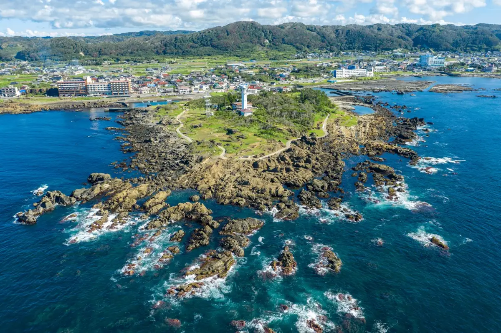
Stay
グランドメルキュール南房総リゾート＆スパ
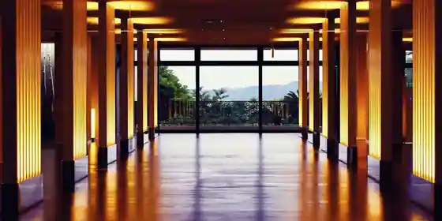
Grand Merukyuru Minamiboso Resort & Supa
美味しい温泉 夢みさき
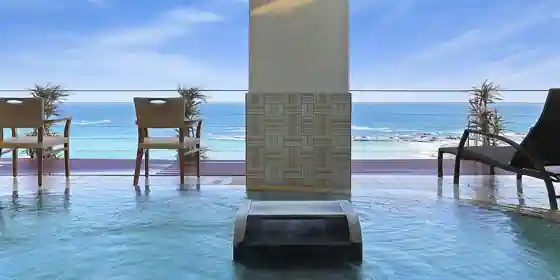
Oishi Onsen Yume Misaki
Inn at Oishi Onsen in Chikura, Minamiboso.
千倉温泉千倉館
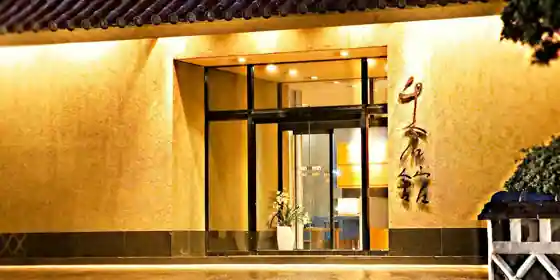
Chikura Onsen Chikura Kan
Inn at Chikura Onsen in Chikura, Minamiboso.
白浜オーシャンリゾート
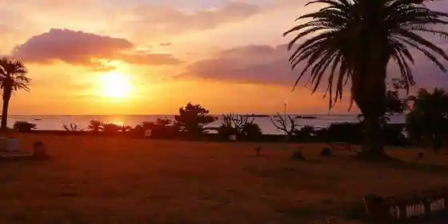
Shirahama Oshan Resort
Resort hotel at Minamiboso Onsen in Shirahama, Minamiboso.
＆SUN Hung five
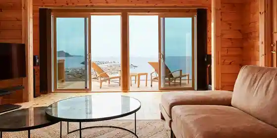
&SUN Hung five
古民家宿るうふ清之家
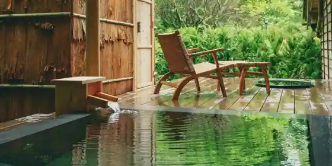
Ko Minka Yadoru Ufu Kiyoyuki Ie
Inn in Wada, Minamiboso with a sauna and a renovated traditional house.
Vacation House & Studio ル・ファーレ白浜
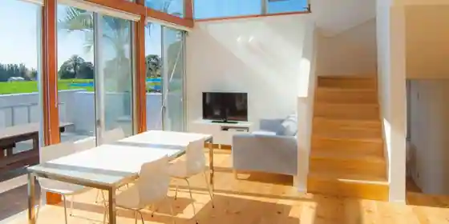
Vacation House & Studio Ru Fare Shirahama
J&B namuya Villa
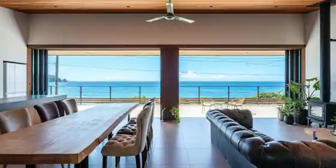
J&B namuya Villa
サウンド スウェル リゾート（Sound Swell Resort）
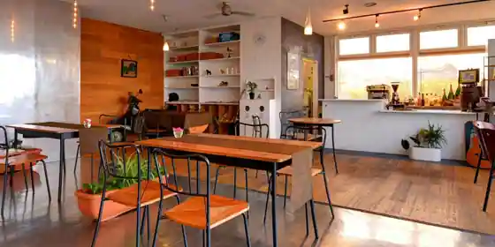
Saundo Sueru Resort (Sound Swell Resort)
南房総白浜 割烹旅館 清都
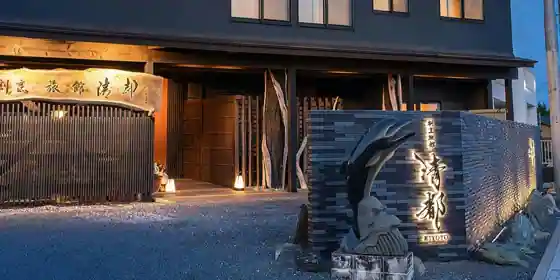
Minamiboso Shirahama Kappo Ryokan Kiyoto
Ryokan inn in Shirahama, Minamiboso with in-room dining and kaiseki dinners.
シーグラス白浜
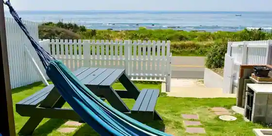
Shigurasu Shirahama
鉄板焼オーベルジュ 別邸 夢咲
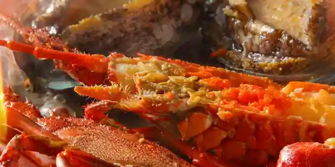
Teppanyaki Oberuju Bettei Yumesaki
Dining
網元の宿 ろくや
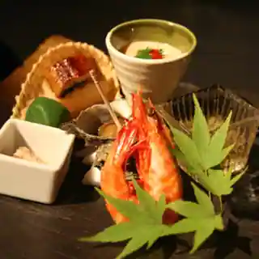
Amimoto No Yado Rokuya
隠れ屋敷 典膳
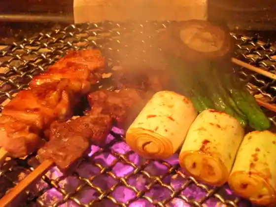
Kakure Yashiki Tenzen
鉄板焼 Baknos
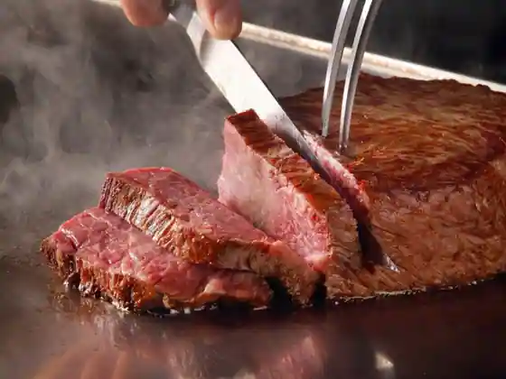
Teppanyaki Baknos
福喜庵
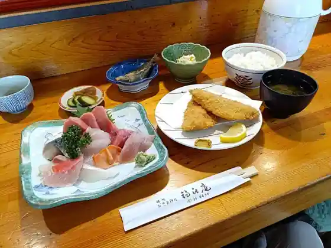
Fukuki Iori
政右ヱ門
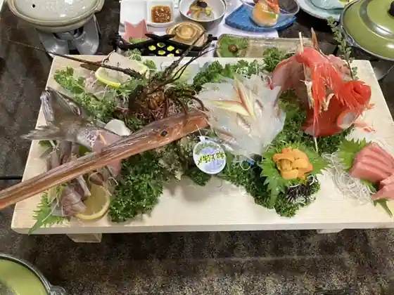
Matsurigoto Migi E Mon
美浜寿し
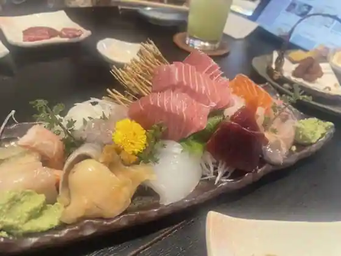
Mihama Hisashi Shi
笑福
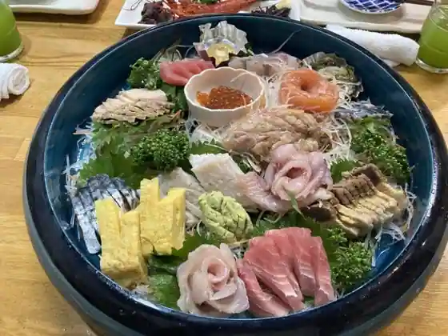
Warai Fuku
そば処 あいづ
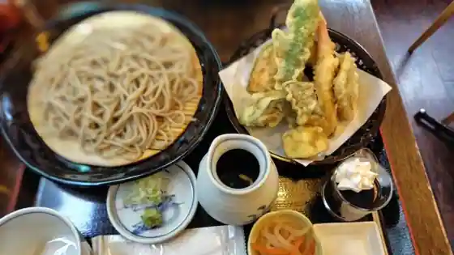
Soba Tokoro Aizu
新都
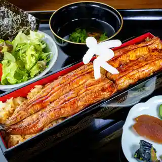
Shinto
おさかな食堂とみうら
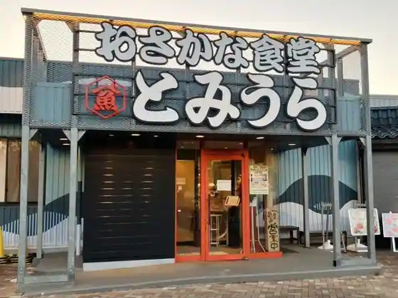
Osakana Shokudo Tomiura
おさかな倶楽部
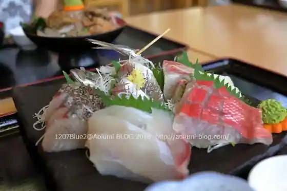
Osakana Kurabu
ビンゴバーガー
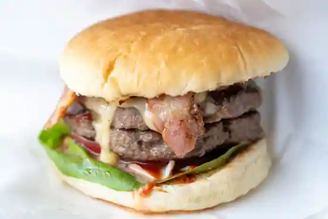
Bingo Burger
南房総 やまと寿司 富浦店

Minamiboso Yamato Sushi Tomiura
浜焼き屋
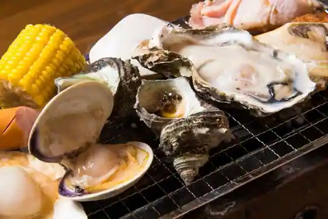
Hamayaki Ki Ya
市場食堂 せん政水産
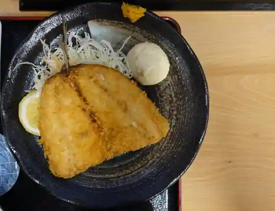
Shijo Shokudo Sen Matsurigoto Suisan
浜の郷
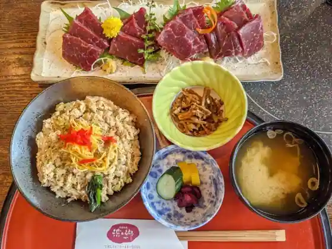
Hama No Sato
はな房
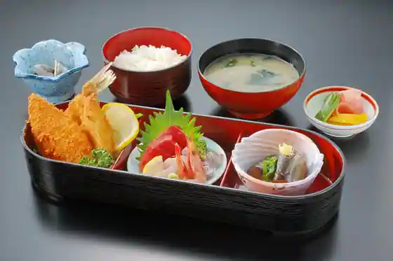
Hana Bo
和田浜
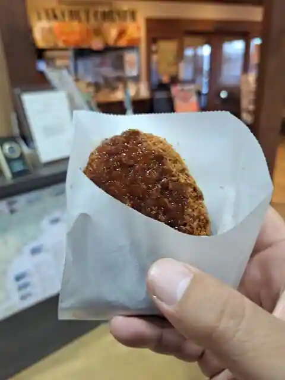
Wada Hama
房総の駅 とみうらカフェ
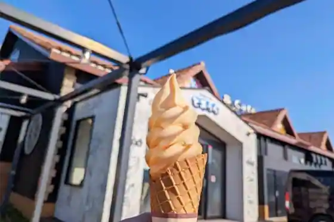
Boso No Eki Tomiura Cafe
海鮮食堂ISOBA
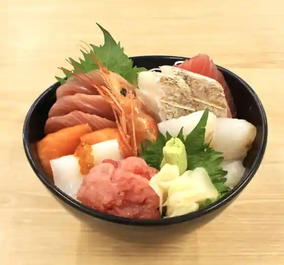
Kaisen Shokudo ISOBA
百姓屋敷 じろえむ
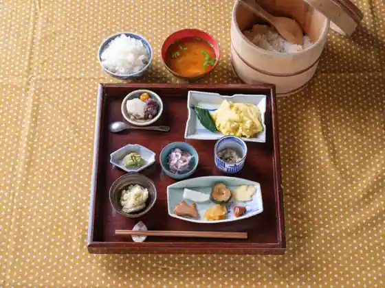
Hyakusho Yashiki Jiroemu
オドーリ・キッチン
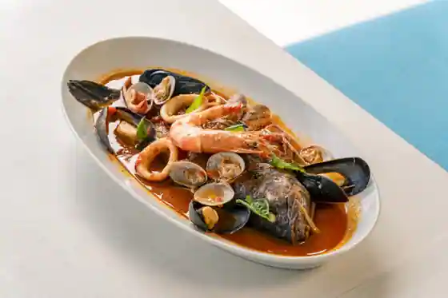
Odori Kitchen
伏姫さんが焼
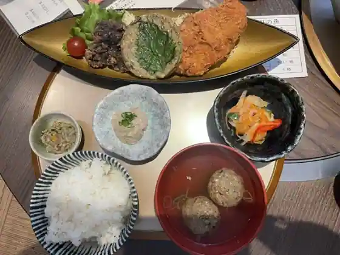
Fusehime Sanga Yaki
お百姓市場
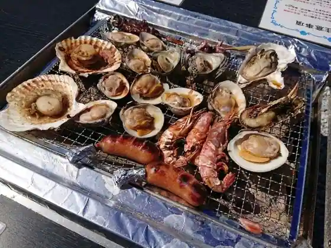
O Hyakusho Shijo
Sights
Nojima Saki Lighthouse
Roadside Station Tomiura Biwa Kurabu
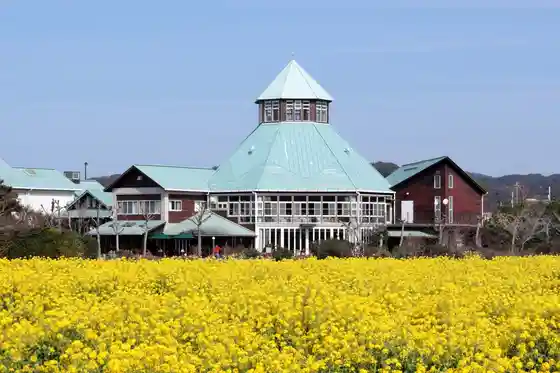
Shiramazu no O Hanahata
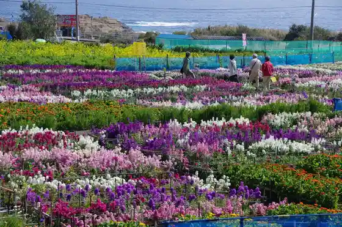
Iwai Coast
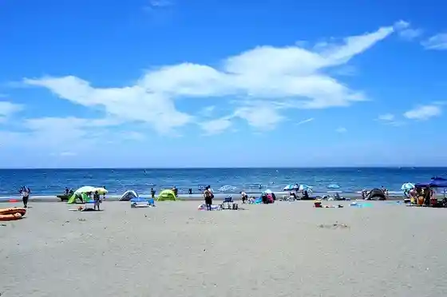
Ofusa Misaki Nature Park (Bijita Center)
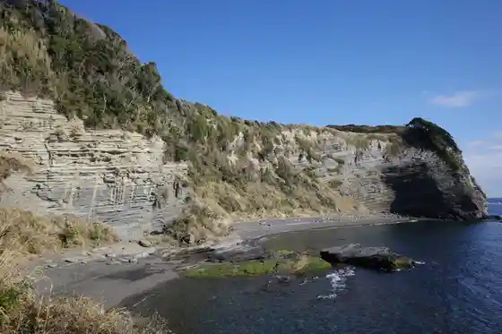
Roadside Station Shirahama Nojima Saki
Boso no Eki Tomiura
Roadside Station Chikura Shiokaze Okoku
Roadside Station Tomi Raku Sato Tomiyama
Koke Shrine
Roadside Station Rozumarii Park
Roadside Station Wada Ura WA O!
Roadside Station Miyoshi Village Hi Village
Kisetsu no Hana (Na no Hana) / Roadside Station Tomiura Biwa Kurabu
Dan Toku Yama Komatsu Tera
Chibaken Rakuno no Sato
Mano Tera
Tadara Kitahama Beach
Konpon Beach
Chikura Orenji Center
Boso no Kura O Hyakusho Market
Kisetsu no Hana (Gancho Sakura) / Ho Mizumi Sono
Nambo Chikura Bridge (Park)
Toyoka Beach
Wada Ura Coast
Roadside Station Otsu no Rika Kurabu
Tadara Kitahama Kaigan Campground
Nambo Janguru Farm
Mineokaikiiki Kan
Shirahama Kosha
Iwai Beach
Shirahama Ichigo Kari Center
Yasuda Farm
Ichigo LABO
Ko Minka Rokusuke
Habu Chikura Umibe no Habu Garden
Nosambutsu Chokubai Tokoro Tsuchi no Megumi Kan
Ishido Tera